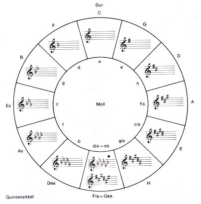

Wiederholung
Quintverwandtschaft
Während die Tonart C-Dur keine Vorzeichen hat, besitzt die Tonart G-Dur, die eine Quinte über C-Dur liegt,
ein Kreuz als Vorzeichen. Dies erhöht das f um einen Halbtonschritt zum fis.
Dieses Prinzip kann nun fortgesetzt werden und es wird jeweils bei der um eine Quinte höheren Tonart im Vergleich
zur Ausgangstonart ein weiteres Kreuz hinzugefügt. Das dazu kommende Kreuz erhöht immer den siebten Ton.
Somit werden die Kreuzvorzeichen in dieser Reihenfolge notiert: fis, cis, gis, dis, ais, eis.
Nach demselben Prinzip wird auch das B Vorzeichen hinzugefügt.
Dafür wird nun allerdings die Tonart nicht um eine Quinte erhöht, sondern erniedrigt.
Wenn wir beispielsweise von der C-Dur eine Quinte runter gehen, erhalten wir die F-Dur mit einem B Vorzeichen,
das den Ton h zu einem b erniedrigt. Für die B Vorzeichen wird jeweils der vierte Ton in der Tonleiter erniedrigt.
Die B Vorzeichen treten somit in der Reihenfolge b, es, as, des, ges, ces, fes auf.
Das Einfügen der “Kreuze” und “Bes” sorgt dafür, dass die Halbtonschritte der verschiedenen Dur-Tonleitern an der richtigen Stelle (drei/vier und sieben/acht) liegen.
Zu jeder Dur-Tonart gibt es eine parallele Moll-Tonart, welche die gleichen Vorzeichen hat.
Die Moll-Tonart liegt immer eine kleine Terz, also drei Halbtonschritte, unter der parallelen Dur-Tonart.
Dieser Zusammenhang ist auch aus der Dur-Tonleiter abzulesen.
So ist immer die VI. Stufe der Dur-Tonleiter der Grundton für die parallele Moll-Tonleiter.
Diese Regeln und der Zusammenhang zwischen Dur und Moll Tonarten sind zudem im Quintenzirkel dargestellt:
